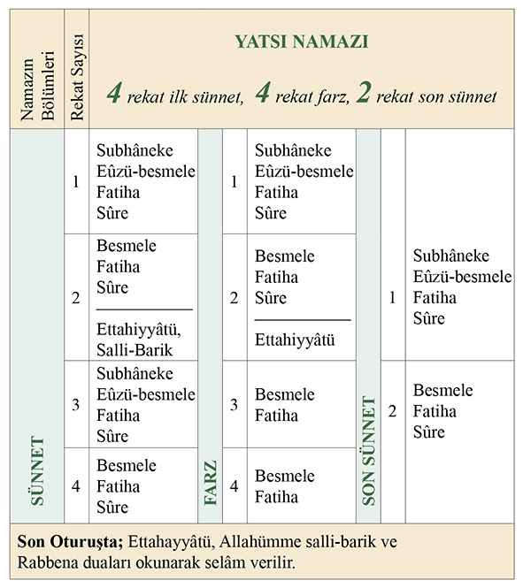
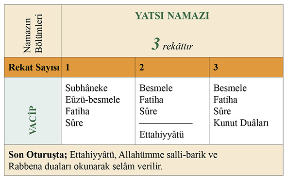

3. BÖLÜM
NAMAZ
Ezan
Bu ezanlar ki şehadetleri dinin temeli
Ebedî yurdumun üstünde benim inlemeli.
M. Akif Ersoy
Her gün beş vakit minarelerimizden yükselen ezan, sözlükte “duyurmak, bildirmek” anlamına gelir. İlmihaldeki anlamı ise, farz namazlar için belli vakitlerde okunan “bilinen özel sözler”dir.
Ezan aracılığı ile halka hem namaz vaktinin girdiği ve cemaatle namaz kılınacağı duyurulmuş olur, hem de Allah’ın büyüklüğü, Peygamber Efendimiz’in (sallallâhu aleyhi ve sellem) Allah’ın elçisi ve namazın, kurtuluş yolunun kapısı olduğu ilan edilir.
Ezan, namaza çağrı olarak kabul edilmeden önce; boru öttürme, çan çalma gibi şeyler teklif edilmişse de Allah Resûlü (sallallâhu aleyhi ve sellem) onları kabul etmemişti. Çünkü madem namaza çağrı yapılacak, o hâlde bu çağırma işi, namazın ruh ve çekirdeğini ifade edebilecek bir kısım kelimelerle yapılmalıydı.
Peygamber Efendimizin de tasdik ettiği ve ilk defa Bilâl-i Habeşi tarafından okunan ve günümüze kadar devam eden ezan şöyledir:
Allahu Ekber, Allahu Ekber,
Allahu Ekber, Allahu Ekber,
Eşhedü en lâ ilâhe illallâh,
Eşhedü en lâ ilâhe illallâh,
Eşhedü enne Muhammeden Resûlullah,
Eşhedü enne Muhammeden Resûlullah,
Hayye ale’s-salâh,
Hayye ale’s-salâh,
Hayye ale’l-felâh,
Hayye ale’l-felâh,
Allahu Ekber, Allahu Ekber,
Lâ ilâhe illallâh.
Sabah ezanının diğer dört vakit ezandan bir farkı vardır. “Hayye ale’l-felâh”dan sonra “Namaz uykudan hayırlıdır.” anlamında iki defa “es-salâtü hayrun mine’n-nevm” denilir.
Kâmet
Bir de farz namazlarda (erkekler için) namaza başlamadan önce “Kâmet” getirilir. Kamet de ezan gibidir. Ondan tek farkı “Hayye ale’l-felâh” dedikten sonra iki defa “kad kâmeti’s-salâh” sözünün ilave edilmiş olmasıdır.
Namaz
Kelime-i şehadetten sonra İslâm’ın en önemli şartı olan namaz, günde beş ayrı zaman diliminde olmak üzere kadın ve erkek her Müslüman için farzdır.
Namaz, ibadet adına çok önemli bir esastır. Hatta ona ibadetlerin özü de denilebilir. Namaz, Allah’ı sürekli hatırlamanın en büyük vesilesidir. Nitekim Kur’ân-ı Kerîm’de “Beni hatırlamak/anmak için namaz kıl.” (Tâhâ, 20/14) buyrulmaktadır.
Günde beş defa kılınan namaz, müminin hayatını düzene koymasında büyük rol oynar. Sürekli belli vakitlerde kılınması, onu ruhen ve bedenen, maddeten ve manen disipline alıştırır.
Namaz Rabbimizin bize bir emridir. Her Müslüman çocuğu yedi yaşına girdiğinde namaz kılmayı öğrenmeli ve on yaşından itibaren hiç aksatmadan namaz kılmaya devam etmelidir. Günde beş vakit farz namaz vardır. Bunlar: Sabah, öğle, ikindi, akşam ve yatsı namazlarıdır. Her namazın bir vakti vardır ve o vakit girdikten sonra kılınır.
Namazların farz, vacip, sünnet gibi türleri vardır:
Farz namazlar
Mutlaka yerine getirilmesi gerekli olan, özürsüz terk edilemeyen namazlardır.
Vacip namazlar
Çoğu İslâm âlimi, vaciple farzı aynı değerde tutmuştur. Vacibin terk edilmesi, farzın terki ölçüsünde olmasa da günahtır ve sorumluluğu gerektirir.
Sünnet namazlar
Sünnet namazlar, farz ve vacip dışında kalan, terki sorumluluk gerektirmeyen; fakat Peygamber Efendimizin kıldığı, diğer Müslümanların da kıldıkları takdirde kendilerini Peygamber Efendimize (sallallahu aleyhi ve selem) daha yakın hissetmelerini sağlayacak namazlardır.
Namaz Vakitleri
Şimdi sırasıyla beş vakit namaz hakkında bilgi sahibi olalım
Sabah namazı: İkinci fecrin doğmasından güneşin doğmasına kadar olan süre, sabah namazının vaktidir. İkinci fecir; sabaha karşı doğu ufkunda yayılmaya başlayan bir aydınlıktır. Bu aydınlıkla sabah vakti girmiş olur. Sabah namazı, iki rekât sünnet iki rekât farz olmak üzere dört rekâttır.
Öğle namazı: Güneş’in gökyüzünde çıktığı en yüksek noktadan batıya doğru yönelmesiyle başlar. Dört rekât sünnet, dört rekât farz, iki rekâtı da son sünnet olmak üzere on rekâttır.
İkindi namazı: İkindi namazının vakti öğle namazının vakti çıktıktan sonra başlar ve güneşin batması ile son bulur. Sekiz rekâttır. Dört rekât sünnet, dört rekâtı farzdır.
Akşam namazı: Akşam namazının vakti, Güneş’in tam olarak batmasıyla başlar ve şafağın kaybolması ile sona erer. Beş rekâttır. Üç rekât farz, iki rekâtı sünnettir.
Yatsı namazı: Yatsının vakti, kırmızı şafağın kaybolduğu andan itibaren başlar ve ikinci fecrin doğmasına kadar devam eder. On rekâttır. Dört rekât sünnet, dört rekât farz ve iki rekâtı da son sünnettir.
Vitir namazı: Vacip bir namazdır ve yatsı namazından sonra kılınır. Üç rekâttır.
Namazın Şartları
Namaz kılabilmek için bazı şartların yerine gelmesi lâzımdır. Bu şartların bazıları namaza başlamadan önce yerine getirilmelidir: Bunlara namazın dışındaki şartlar denir. Altı tanedir.
1. Hadesten taharet: Namaz abdesti olmayan bir kimsenin abdest alması, gusül yapması gereken bir kimsenin ise boy abdesti alması demektir. Bu çeşit taharet, maddî kirleri giderme, beden sağlığını koruma gibi birçok yararı içinde bulundursa da esas itibarıyla başka hikmetlere de açık dinî muhtevalı ve ibadet maksatlı bir temizliktir.
Bilinen namaz abdestinin olmaması durumu, küçük hades olarak; cünüplük, âdet görme (hayız) ve lohusalık gibi, gusül etmeyi gerektiren durumlar ise büyük hades olarak adlandırılır.
2. Necâsetten Tahâret: Necasetten taharet, vücut, elbise ve namaz kılınacak yerin, -insan kanı ve idrarı, at, koyun gibi hayvanların idrar ve dışkıları gibi- dinen pis sayılan şeylerden temizlenmesi demektir. Necaset (pislik) iki çeşittir:
a. Ağır (galiz) necâset: İnsanın ön ve arkadan çıkan pisliği, eti yenmeyen hayvanların sidiği, dışkısı ve salyası, tavuk, kaz ve ördeğin dışkısı, kan, irin, meni, mezi, vedi, ağız dolusu gelen kusuntu, şarap ve diğer haram içkiler. Bu necâsetlerden katı olanların 3, 2 gramdan fazlası, sıvı olanların ise el ayası kadar veya daha fazlası namaza manidir.
b. Hafif necâset: Atın sidiği, eti yenen ehil ve yabani hayvanların pisliği, eti yenmeyen kuşların dışkısıdır. Bu necâsetler, bulaştığı uzvun veya elbisenin dörtte birinden fazla ise namaza manidir.
3. Vücudun örtülmesi gereken yerlerinin örtülmüş olması. (Erkeklerde göbekle diz kapağı arası, kadınlarda el, ayak, yüz hariç bütün vücut).
4. Namaz vaktinin girmiş olması.
5. Kıbleye yönelmek.
6. Kılınacak namaza niyet etmek.
Bir de, namazın içinde yerine getirilmesi gereken rükünler vardır. Bunlar da altı tanedir.
Namazın Rükünleri
1. İftitah tekbiri: Namaza başlarken alınan tekbir olup “Allahu Ekber” cümlesini söylemektir.
2. Kıyam: İftitah tekbiri ve her rekâtta Kur’ân’dan okunması gerekli asgarî miktarı okuyacak kadar bir müddet ayakta durmaktır.
3. Kıraat: Kur’ân okumak demektir. Namazda Kur’ân, kıyam halinde iken yani ayakta dururken okunur. Namazda okunması farz olan asgari miktar, kısa üç âyet veya buna denk bir uzun âyettir.
4. Rükû: Kıyamdan sonra eller dizlere erecek şekilde öne doğru eğilmek demektir. Allah Resûlü aleyhissalatü vesselâmın uygulamasına en uygun rükû şekli, sırt ve baş düz bir satıh oluşturacak biçimde eğilmektir.
5. Sücûd: Namazda belirli uzuvları yere veya yere bitişik bir mahalle koyarak iki defa yere kapanmak demektir. Allah Resûlü aleyhissalatü vesselâmın uygulamasına en uygun secde, yüz, eller, dizler ve ayak parmaklarının üzerine olmak üzere yedi uzuv üzerinde yapılanıdır.
6. Ka’de-i Ahîre: “Son oturuş” demek olup namazın sonunda bir süre (teşehhüd miktarı) oturup beklemek demektir. İki rekâtlık namazlardaki oturuş, daha önce oturuş bulunmadığı için son oturuş sayılır.
Son oturuşta olması gereken asgari süre “tahiyyat” duasını okuyacak kadar bir süredir.
Namazın rükünlerinin dışında kalan ama mutlaka yerine getirilmesi gereken bazı şartlar vardır. Bunlara namazın vacipleri denir.
Namazın Vacipleri
1. Namaza “Allahu Ekber” diyerek başlamak.
2. Namazlarda Fatiha Sûresi’ni okumak.
3. Fatiha’yı zamm-ı sûreden önce okumak.
4. Secdede alınla beraber burnu da yere koymak.
5. Namazların ilk ve son oturuşlarında Tahiyyât’ı okumak.
6. Namazın sonunda selâm vermek.
7. Namazda ta’dil-i erkâna riayet etmek.
Sünnet, vacipleri tamamlar, sevabın artmasına vesile olur. Sünnetleri yerine getirmek Peygamber Efendimize (sallallâhu aleyhi ve sellem) olan sevgimizin ve bağlılığımızın işaretidir.
Namazın Sünnetleri
1. Beş vakit namaz ile cuma namazı için ezan ve kamet getirmek
2. İftitah tekbirini alırken elleri yukarıya kaldırmak.
3. Sübhaneke ve Eûzü-Besmele’yi sessizce okumak.
4. Fatiha’nın sonunda âmin demek
5. Rükû’da dizleri dik tutup bükmemek.
6. Ettahiyyât’ı sessizce okumak.
7. Önü açık bir yerde namaz kılarken önüne sütre koymak.
Namazın Mekruhları
Mekruh, yapılmaması kesin ve bağlayıcı olmayan üslûpla istenen fiillerdir.
Namazın mekruhları şunlardır:
1. Sıkışık abdestle namaz kılmak.
2. Namazda elbise veya bir başka yerle oynamak.
3. Namazda bir yere dayanmak.
4. Gerinmek veya esnemek.
5. Parmakları çıtlatmak.
Bunlar namazı bozmaz ama sevabını azaltır. Bir de meydana gelmesi namazı bozan durumlar vardır.
Namazı Bozan Hâller
1. Namaz kılarken konuşmak, gülmek.
2. Göğsü kıbleden çevirmek.
3. Namaz kılanın, dıştan bakıldığında, “Namaz kılmıyor.” diye düşündürecek şekilde bir işle meşgul olması.
4. Avret yerlerinin açılması.
5. Bir şeyler yiyip içmek.
Namaz Nasıl Kılınır?
Namaza Duruş
Temiz bir yerde kıbleye yönelerek niyet edilir.
Namaza Başlama Tekbiri
Erkek: Eller kulak hizasında. Avuçlar kıbleye karşı açık vaziyette.
Kadın: Eller omuz hizasında. Parmaklar bitişik ve avuçlar kıbleye karşı açık vaziyette.
Bu hâlde “Allahu Ekber” denilerek namaza başlanır ve eller bağlanır.
Kıyam
Erkek: Gözler secde yerinde. Eller göbek üzerinde. Sağ el, baş ve serçe parmağı ile sol eli kavramış bir vaziyette.
Kadın: Gözler secde yerinde. Eller göğüs hizasında. Sağ el sol elin üzerinde.
Kıyamda Fatiha ve sûre okunur.
Kıyamda bu okumaya “Kıraat” denilir.
Erkek: Vücut iyice eğilir. Sırt ile baş aynı hizada olmalıdır. Eller diz kapaklarını kavrar.
Kadın: Vücut az eğilir. Dizler hafif bükülür. Eller dizlerin üzerindedir.
Rükû
Rükû’da üç defa “sübhane rabbiye’l-azîm” denilir.
Kavme
Rükû’dan “Semiallâhu limen hamideh” diyerek doğrulunur.
Kavmede de “Rabbenâ veleke’l-hamd” denir.
Secde
Erkek: Alın ve burun yere değmiş bir vaziyette.
Eller yüzün yanında. Dirsekler hafif yana açık. Ayak topukları bitişik durumda.
Kadın: Dirsekler yana ve yere yapıştırılır. Dizler karınla bitişir.
Secde, iki defa art arda yapılır.
Secdede üç defa “sübhane rabbiye’l-a’lâ” denilir.
Oturuş (Tahiyyât)
Erkek: Eller dizler üzerine konur. Sağ ayak, parmaklar kıbleye gelecek şekilde dikilir.
Kadın: Eller dizler üzerine konur. Ayaklar sağa yatırılır. Uyluk üzerine oturulur.
Oturuşta “Ettahiyyâtü”, “Allahümme salli”, “Allahümme barik”, “Rabbenâ” duâları okunur.
Selâm
Baş önce sağa çevrilir, gözlerle omuzlara bakılır. Sonra sola çevrilir gözlerle omuzlara bakılır.
Selâmda, “esselâmü aleyküm ve rahmetullah” denilir.
Günlük Namaz Çizelgeleri
Aşağıdaki namazların kılınış şekilleri aynıdır:
• Sabah namazının sünneti
– Öğle namazının son sünneti.
– Akşam namazının sünneti
– Yatsı namazının son sünneti.
• İkindi namazının sünneti
– Yatsı namazının ilk sünneti.
Sabah Namazı
Sabah namazının sünnetinin nasıl kılındığından başlayalım:
Sabah namazının iki rekât sünneti:
Önce kıbleye döner, “niye ettim sabah namazının sünnetini kılmaya” diye niyet ederiz. Niyet ettikten sonra tekbir getirir ve namaza başlarız.
Eller bağlandıktan sonra “Sübhaneke”yi okuruz. Sonra “Eûzü-besmele” çekeriz. Fatiha Sûresinin ardından namaz sûrelerinden birini okuruz. Ardından “Allahu Ekber.” diyerek rükûa gideriz. Rukûda üç defa “Sübhâne rabbiye’l-azîm” dedikten sonra tekrar doğruluruz. Doğrulurken “Semiallahu limen hamideh.” deriz. Tam doğrulunca “Rabbenâ lekel hamd.” deriz. Sonra “Allahu Ekber.” diyerek secdeye gideriz. Secdede üç defa “Sübhâne rabbiye’l-â’lâ” deriz. Secdeden “Allahu Ekber.” diyerek kalkarız ve otururuz.
Bu şekilde kısa bir süre bekledikten sonra tekrar, Allahu ekber diyerek secdeye gideriz. Yine üç defa “Sübhâne rabbiye’l-a’lâ” dedikten sonra “Allahu Ekber” diyerek ayağa kalkarız. Bu şekilde birinci rekâtı tamamlamış oluruz. İkinci rekâtın başında da ellerimizi bağlarız.
Besmele çektikten sonra Fatiha ve bir sûre okuyup “Allahu Ekber” diyerek rükûa gideriz.
Rukû’da üç defa “Sübhâne rabbiye’l-azîm.” dedikten sonra “Semiallahu limen hamideh” diyerek doğruluruz. Tam doğrulunca “Rabbenâ lekel hamd” deriz.
Sonra “Allahu Ekber” diyerek secdeye varırız. Secdede üç defa “Sübhane rabbiye’l-a’lâ” deriz. “Allahu Ekber” diyerek doğrulur otururuz. Birinci rekâttaki gibi kısa bir süre bekledikten sonra tekrar “Allahu Ekber” diyerek secdeye varırız. Üç defa “Sübhane rabbiye’l-a’lâ” deriz ve “Allahu ekber” diyerek doğrulup otururuz. Oturduktan sonra “Ettahiyyâtü, Allahümme salli, Allahümme barik ve Rabbena” duâlarını okuruz. Böylece iki rekâtlık namazı tamamlamış oluruz. Başımızı önce sağa çevirip “Esselâmü aleyküm ve rahmetullah” diyerek selâm veririz. Aynı şekilde sola da selâm veririz. Namazımızı tamamlamış oluruz.
Sabah namazının iki rekât farzı:
Sabah namazının farzı da aynı sünneti gibi kılınır; ancak farzdan önce erkekler kamet getirirler.
Diğer vakit namazları da şöyle kılınır.
Öğle Namazı
Öğle namazının ilk dört rekât sünneti:
İlk iki rekât aynen sabah namazının iki rekât sünneti gibi eda edilir. İkinci rekâta oturulduğunda yalnız “Ettahiyyâtü” okunur ve üçüncü rekâta kalkılır. “Sübhâneke” okunmadan sadece “Besmele” çekilerek “Fatiha” ve bir sûre okunur sonra rükû, secdeler ve dördüncü rekât da aynı üçüncü rekât gibi kılınıp oturulur. Ve “Ettahiyyâtü, Allahüme Salli-Barik, Rabbena” duâları okunup selâm verilir.
Öğle namazının dört rekât farzı:
İlk iki rekât aynen sabah namazı gibi eda edilir. İkinci rekâttan sonra oturunca sadece Ettahiyyâtü okunur. Üçüncü rekâta kalkılır.
Besmele ile fatiha okunur. Rükû ve secdelerden sonra dördüncü rekâta kalkılır. Yine besmele ile fatiha okunur, rükû ve secdelerden sonra oturulur. Ettahiyyâtü, Salli, Barik ve Rabbenâ okunup selâm verilir.
Öğle namazının iki rekât son sünneti:
Aynı sabah namazının sünneti gibi kılınır.
İkindi Namazı
İkindi namazının dört rekât sünneti:
İlk iki rekât sabah namazı gibi eda edilir. İkinci rekâtta oturunca Ettahiyyâtü’den sonra Salli-Barik okunur ve üçüncü rekâta kalkılır. Yine sabah namazının iki rekâtı gibi Sübhaneke ile başlanır. Aynı şekilde kılınarak selâm verilir.
İkindi namazının dört rekât farzı:
Aynen öğle namazının farzı gibi eda edilir.
Akşam Namazı
Akşam namazının üç rekât farzı:
Öğle namazının farzı gibi kılınır. Fakat üçüncü rekât kılındıktan sonra oturulur ve selâm verilir.
Akşam namazının iki rekât sünneti:
Aynen sabah namazının sünneti gibi kılınır.
Yatsı Namazı

Yatsı namazının dört rekât sünneti:
Aynen ikindi namazının sünneti gibi kılınır.
Yatsı namazının dört rekât farzı:
Aynen öğle namazının farzı gibi kılınır.
Yatsı namazının iki rekât son sünneti:
Aynen sabah namazının sünneti gibi kılınır.
Vitir Namazı

Vitir namazı üç rekâttır. İlk iki rekâtı sabah namazının sünneti gibi kılınır. Yalnız ikinci rekâtta oturunca “Ettahiyyâtü” okunduktan sonra üçüncü rekâta kalkılır. “Besmele” ile “Fatiha” ve bir sûre okunur. Sonra “Allahu Ekber” denilip eller kulaklara kaldırılır ve tekrar bağlanır. Kunut duâları okunur ve rükû, secdeler yapılıp oturulur, oturuluştaki duâlar okunup selâm verilir.
Cuma Namazı
Beş vakit namazdan başka Müslüman erkeklerin üzerine farz olan bir başka namaz daha vardır. Bu da cuma namazıdır.
Cuma namazı öğle vaktinde ve cemaatle kılınır. On rekâttır, dört rekât sünnet, iki rekât farz, dört rekât son sünnet.
Cuma namazının kılınışı
Cumanın ilk dört rekât sünneti:
Cuma namazının sünnetine niyet edilir, aynen öğle namazının sünneti gibi dört rekât kılınır.
Cuma namazının iki rekât farzı:
Cuma namazının iki rekât farzı kılınmadan önce hutbe dinlenir. Kametten sonra Cuma namazının farzına niyet edilerek imama uyulur. İmam tekbir aldıktan sonra cemaat da sessizce tekbir alır ve sadece sübhaneke’yi okur. Başka bir şey okunmaz. İkinci rekâtta da bir şey okunmaz. Sadece rükû, secde ve oturuşta duâlar okunur.
İmamla beraber selâm verilir. Böylece Cuma namazının farzı kılınmış olur.
Cuma namazının dört rekât son sünneti:
Bu da aynen öğle namazının sünneti gibi kılınır.
Dört rekât zuhr-i âhir namazı:
Öğle namazının farzı gibi kılınır.
İki rekât vaktin sünneti:
Sabah namazının sünneti gibi kılınır.
Bayram Namazı
Yılda iki defa Ramazan ve Kurban bayramlarında bayram namazı kılınır. Bayram namazını kılmak vaciptir. Bayramın birinci günü güneş doğduktan bir miktar sonra kılınır.
Bayram namazı şöyle kılınır:
Bayram namazına niyet edilip imamla birlikte Allahu ekber denilerek namaza başlanır. Sessizce sübhaneke okunur. İmam Allahu ekber diyerek ellerini kulaklarına kaldırır.
Cemaat de içinden “Allahu Ekber” diyerek aynı şekilde ellerini kaldırır, sonra yanlara salar. İkinci defa yine aynı şekilde tekbir alınıp eller yana salınır. Üçüncü defa yine tekbir alınır ve bundan sonra eller bağlanır. İmam fatiha ve bir sûre okur. Rükû ve secdeler yapılıp ikinci rekâta kalkılır.
İkinci rekâtta imam fatiha ve bir sûre okur. Sonra yine birinci rekâttaki gibi üç tekbir alınıp eller yana salınır. Sonra imam “Allahu Ekber” diyerek rükûa gider. Bundan sonra secdeler yapılır ve oturulup selâm verilir.
Bayram namazından sonra hutbe dinlenir.
Teşrik tekbirleri
Kurban Bayramı’nda arefe günü sabah namazından sonra başlayıp dördüncü günü ikindi namazının sonunda bitmek üzere her farz namazın sonrasında bir defa tekbir getirilir. Getirilmesi vacip olan bu tekbirlere teşrik tekbiri denir.
“Allahu Ekber Allahu Ekber lâ ilâhe illâllahu vallahu ekber Allahu Ekber ve lillâhi’l-hamd”
Teravih Namazı
Yalnız Ramazan’da her gün yatsı namazı ile vitir namazı arasında kılınır. Ramazan’da teravih kılmak sünnettir. Teravihten sonra vitir namazı kılınır. Teravih namazı yirmi rekâttır. Yalnız veya cemaatle kılınabilir. İkinci rekâtta bir veya dört rekâtta bir selâm verilerek kılınabilir. İki rekâtta bir selâm vererek kılmak daha faziletlidir. Teravih namazı iki rekâtta bir selâm verilerek kılındığında aynen sabah namazının sünneti gibi kılınır. Dört rekâtta bir selâm verilerek kılındığında ise ikindi namazının sünneti gibi kılınır.
Yolculuk Namazı
Yolculuğa çıkan kimseler için dinimizde bazı kolaylıklar vardır. Bunlardan biri de namaz içindir.
Bulunduğu yerden 90 km. uzaklıkta bir yere gidecek olan kimse ‘yolcu’ sayılır. Bu kimse, gittiği yerde on beş günden az kalacaksa, burada ve yolculuk esnasında, dört rekât olan farz namazları iki rekât olarak kılar. Sünnetleri kısaltmaz, durumu müsaitse onları tam kılar. Akşam namazı ve vitir namazlarını yine üçer rekât olarak kılar.
Cenaze Namazı
Cenaze namazı, vefat eden Müslümanlara bir duadır. Günahlarının affedilmesi ve kusurlarının bağışlanması için yerine getirilen son bir vazife ve bir vefa borcudur.
Cenaze namazı, Müslümanların bazılarının kılmasıyla diğerlerinin üzerinden bu sorumluluğun kalktığı bir ibadettir. Eğer hiç kimse kılmazsa, o beldedeki bütün Müslümanlar günahkâr olurlar. Bu tür ibadetlere “Farz-ı Kifâye” denir.
Cenaze Namazı Nasıl Kılınır?
Cenaze namazı cemaatle kılınan bir namazdır. Cenaze, yıkanmış ve kefenlenmiş olarak namazın kılınacağı yerde “Musallâ”ya konulur. Cenaze cemaatin önünde bulunur. Namazı kıldıracak imam ölünün göğsü hizasına durur. Cemaat ayakta ve kıbleye karşı imamın arkasında saf bağlar. Cemaatin üç saf halinde olması müstehabdır.
Cenaze namazı dört tekbir getirilerek ayakta kılınır. Rükû ve secdesi yoktur. “Niyet ettim Allah rızası için şu Müslüman’ın cenaze namazını kılmaya, uydum imama” diyerek niyet edilir. İmamla birlikte tekbir alınır ve eller bağlanır, sonra “Sübhaneke” duası “vecelle senauk” ile birlikte okunur. Ardından imam ile beraber ikinci tekbir alınır ve “Allahümme salli-barik” duaları okunur. Sonra imam ile üçüncü tekbir alınır ve biliniyorsa Peygamber Efendimizin okuduğu cenaze dualarından biri okunur. Bilinmiyorsa “Kunut duası” ya da “Rabbena âtinâ”, “Rabbenağfirli” duaları veya başka bir dua âyeti okunur. Bunlardan sonra imam ile dördüncü tekbir alınır ve bir şey okumadan sağa ve sola selâm verilerek namaz bitirilmiş olur.
İlk tekbirden sonraki tekbirlerde eller kaldırılmaz. Diğer namazları bozan her şey cenaze namazını da bozar.
Kaza Namazları
Uyuma, unutma gibi herhangi bir sebepten dolayı vaktinde kılınmayan bir namazı vaktinden sonra kılmaya kaza denir. Vaktinde namazlarımızı kılmalıyız. Ama kılamadı isek mutlaka kaza etmeliyiz.
Kaza namazı şöyle kılınır:
Önce ezan okunur, kamet getirilir ve hangi namaz kılınacaksa o namazın kazasına niyet edilir ve sadece farzı kılınır. Sünnetler kaza edilmez.
Sabah namazı kazaya kaldığında o gün güneş doğduktan sonra kaza edilecekse önce sünneti sonra farzı kaza edilir.
Cemaatle Namaz
Evde olsun camide olsun farz namazlar cemaatle kılınmalıdır. Cemaatle namaz kılmak yalnız başına namaz kılmaktan yirmi yedi defa daha fazla sevap kazandırır.
Cemaatle namaz şöyle kılınır:
İmam cemaatten biraz önde durur. İmam, fatihayı ve sonra buna ekleyeceği âyet veya sûreyi okurken cemaat okumadan dinler. Fakat diğer tesbih ve duâları cemaat de okur.
İmama uyan kimse, birinci rekâtta sadece sübhaneke’yi okur. İmam ister sesli okusun, ister sessiz okusun, bütün rekâtlarda hiçbir şey okumaz. Ancak rükû ve secde tesbihlerini, oturuştaki duâları okur.
Cemaatle namaz kılmak için iki kişi yeterlidir. Biri imam olur diğeri ona uyar. İmama uyan, akıllı bir çocuk veya bir kadın da olsa cemaatle namaz kılınmış olur. Cemaatle kılınan bir namaza sonradan yetişen kimse hemen imama uyar. İmam selâm verince, o selâm vermeden ayağa kalkar ve yetişemediği rekâtları kılar.
Rükûdan evvel veya rükû esnasında imama uyan kimse o rekâta yetişmiş demektir.
İmama uyan kimse, imamdan önce tekbir almaz, rükû ve secdeye varmaz.
Cemaate İkinci veya Daha Sonraki Rekatlarda Yetişen Kimse Namazını Nasıl Tamamlar?
Cemaate birinci rekatta yetişen kimse yukarıda anlatıldığı üzere namazını imamla beraber kılar. Cemaate diğer rekatlarda yetişen kimselerde namazlarını şöyle kılarlar:
İkinci rekatta cemaate yetişen kimsenin durumu: Birinci rekatın rükûuna yetişemeyen kimse, yetiştiği yerde niyet ederek tekbir alır ve imama uyarak namaza devam eder. Son oturuşta “Ettahiyyâtü”yü okuyup imamın selâm vermesini bekler. İmam sağ tarafa selâm verince yetişemediği rekatı tek başına kılmak üzere selâm vermeden “Allahu Ekber” diyerek ayağa kalkar, Sübhaneke, Eûzü-Besmele, Fatiha ve bir sûre okur. Daha sonra rükû ve secdeleri yaparak oturur. “Ettahiyyâtü, Allahümme salli, Allahümme barik ve Rabbena” duâlarını okur. Önce sağa, sonra sola selâm vererek namazını bitirir.
Üçüncü rekatta cemaate yetişen kimsenin durumu: Dört rekatlı bir namazın üçüncü rekatında imama uyan kimse, son oturuşta “Ettahiyyâtü”yü okuyup imamın selâm vermesini bekler. İmam sağ tarafa selâm verince yetişemediği rekatları kılmak üzere selâm vermeden “Allahu Ekber” diyerek ayağa kalkar ve yetişemediği iki rekatı şöyle tamamlar:
“Sübhaneke”, “Eûzü-Besmele”, “Fatiha” ve bir sûre okuyup bilindiği üzere rükû ve secdelerini yaptıktan sonra “Allahu Ekber” diyerek ayağa kalkar. “Besmele”, “Fatiha” ve bir sûre okuyup yine rükû ve secdeleri yaptıktan sonra oturur. “Ettahiyyâtü, Allahümme salli, Allahümme barik ve Rabbena” duâlarını okuyup sağa ve sola selâm vererek namazını tamamlamış olur.
Üç rekatlı olan akşam ve vitir namazlarının üçüncü rekatında cemaate yetişen kimse imamla beraber o rekatı kılar. “Ettahiyyâtü”yü okuyup imamın selâm vermesini bekler. İmam sağ tarafa selâm verince kendisi selâm vermeden “Allahu Ekber” diyerek ayağa kalkar, Sübhaneke, Eûzü-Besmele, Fatiha ve bir sûre okur. Daha sonra rükû ve secdeleri yaparak oturur. Burada yalnız “Ettahiyyâtü”yü okuyup “Allahu Ekber” diyerek ayağa kalkar. “Besmele”, “Fatiha” ve bir sûre okuyup yine rükû ve secdeleri yaptıktan sonra oturur. “Ettahiyyâtü, Allahümme salli, Allahümme barik ve Rabbena” duâlarını okuyup sağa ve sola selâm vererek namazını bitirmiş olur.
Dördüncü rekatta cemaate yetişen kimsenin durumu: Dört rekatlı bir namazın dördüncü rekatında imama uyan kimse o rekatı imam ile beraber kılar ve son oturuşta “Ettahiyyâtü”yü okuyup bekler. İmam sağ ve sol tarafa selâm verdikten sonra “Allahu Ekber” diyerek ayağa kalkar ve burada Sübhaneke, Eûzü-Besmele, Fatiha ve bir sûre okur. Daha sonra rükû ve secdeleri yaparak oturur. Burada yalnız “Ettahiyyâtü”yü okuyup “Allahu Ekber” diyerek ayağa kalkar. “Besmele”, “Fatiha” ve bir sûre okuyup yine rükû ve secdeleri yapıp oturmaksızın ayağa kalkar. Yalnız “Besmele” ve “Fatiha”yı okuduktan sonra rükû ve secdeleri yapar ve oturur. “Ettahiyyâtü, Allahümme salli, Allahümme barik ve Rabbena” duâlarını okuyup sağa ve sola selâm vererek namazını tamamlamış olur.
Son rekatın rükûundan sonra imama yetişen kimse, imam sağ ve sol tarafa selâm verince “Allahu Ekber” diyerek ayağa kalkar, kendisi baştan sona bütün rekatları kılarak namazını tamamlamış olur.
Sehiv Secdesi
Sehiv secdesi, yanılma secdesidir. Bir kimse namazda namazın farzlarından birini geciktirirse, namazın vaciplerinden birisini terk eder veya geciktirse sehiv secdesi yapması gerekir.
Namazda son oturuşta “Ettahiyyâtü” okunup sağa selâm verilir. Bundan sonra hemen secdeye gidilir. İki defa secde yaptıktan sonra tekrar oturulur. “Ettahiyyâtü”, “Allahümme salli-barik” “Rabbenâ” duâları okunur ve selâm verilir.
Tilâvet Secdesi
Kur’ân-ı Kerîm’de bazı secde âyetleri vardır ki, bunlardan birini okuyan veya dinleyen kimseye secde etmek vacip olur. Kur’ân-ı Kerîm’de on dört yerde secde âyetleri vardır.
Tilâvet secdesi şöyle yapılır:
Tilâvet secdesi niyetiyle eller kaldırılmaksızın Allahü ekber denilerek secdeye varılır. Secdede üç kere “sübhane rabbiye’l-a’lâ” denir. Sonra “Allahü ekber” denilerek secdeden kalkılır. Ayağa kalkarken “Gufrâneke rabbenâ ve ileykel masîr” denmesi müstehaptır.
Bazı Nafile Namazlar
Beş vakit kılınan namazların sünnetlerinden başka birtakım namazlar daha vardır. Bunlara “Nâfile Namazı” denir. Bunlar müstehap ve mendup namazlardır. Bu namazları mümkün oldukça kılmak, kılmaya çalışmak, peygamberimize olan muhabbeti ve bağlılığı kuvvetlendirme bakımından son derece önemlidir. Ayrıca bu namazlarda sayılamayacak kadar çok sevaplar da vardır. Bir hadis-i kudsîde Cenâb-ı Hak: “Kulum farzlarla benim azabımdan kurtulur, nâfilelerle de bana yaklaşır.” buyurmaktadır.
Evvâbin Namazı
Akşam ile yatsı arasında kılınan bir namazdır. Evvâbin namazı, tevbe eden ve Allah’a sığınanların namazı demektir. Altı rekâtlık bir namaz olan evvâbin tek selâmla kılınabileceği gibi ikişer rekâttan üç selâmla da kılınabilir. Peygamberimiz (sallallâhu aleyhi ve sellem), “Kim, akşam namazından sonra kötü bir şey konuşmaksızın altı rekât namaz kılarsa, bu kendisi için on senelik ibadete denk kılınır.” buyurmuştur.
Duhâ/Kuşluk Namazı
Güneşin doğması üzerinden yaklaşık 45-50 dakika geçmesinden zeval vaktine (güneşin tam tepe noktada olduğu an) kadar olan süre içerisinde iki, dört, sekiz veya on iki rekât kılınabilen bir müstehap namazdır. Sekiz rekât kılmak daha faziletlidir. Peygamberimiz’in (sallallâhu aleyhi ve sellem) kuşluk vaktinde on iki rekât namaz kılan kişi için Allah’ın cennette bir köşk bina edeceğini müjdelediği nakledilmektedir.
Teheccüd Namazı
Teheccüd namazı, gece bir miktar uyuduktan imsak vaktine kadar geçen zaman içinde kılınan bir namazdır. Resûlullah’ın (sallallâhu aleyhi ve sellem) hiç terk etmediği namazlardandır. Efendimiz (sallallâhu aleyhi ve sellem) yatsıyı kıldıktan sonra vitri kılmadan uyur, gecenin ortalarından sonra uyanıp teheccüd namazı kıldıktan sonra vitir namazını ve daha sonra vakti girince sabah namazının sünnetini kılardı.
Teheccüdle gecenin ihya edilmesi, berzah alemini aydınlatan bir projektördür. Gönüllerin diri ve canlı olması; bir yönüyle gecelerin canlı olmasına bağlıdır.
Tesbih Namazı
Tesbih namazı tevbenin, istiğfarın en büyüğü ve bütün bedenle yapılanıdır.
Resûlullah (sallallâhu aleyhi ve sellem) muhterem amcaları Hazret-i Abbas’a bir hediye, bir lütufta bulunayım mı diyerek bu namazı tavsiye etmiştir. “Bak amca sana on faydası olan bir şey öğreteyim; bunu yaparsan günahlarının ilki-sonu, eskisi-yenisi, bilmeyerek işlediğin-bilerek işlediğin, küçüğü-büyüğü ve gizli yaptığın-açıktan yaptığın on türlü günahını Allah bağışlar.”
Tesbih namazı dört rekâtlı bir namazdır. Her rekâtında 75 kere: “Sübhânallahi ve’l-hamdü lillâhi ve lâ ilâhe illâllahü vallahü ekber” cümlesi okunur. Bir rekât içinde bu tesbih cümlesinin söylendiği yerler ve miktarları şöyledir:
• İlk rekâtta Sübhâneke’den sonra; ikinci rekâtta da Fâtiha‘dan önce 15 kere,
• Fâtiha ve sûre okunduktan sonra 10 kere,
• Rükû’da 3 kere Sübhâne rabbiye’l-azîm dendikten sonra 10 kere,
• Rükûdan kalkıldığında 10 kere,
• Secdede, 3 kere Sübhâne rabbiye’l-a’lâ denilmesini müteâkip 10 kere,
• Secdeden doğrulup oturulduğunda 10 kere,
• İkinci kere secdeye gidilip 3 kere Sübhâne rabbiye’l-a’lâ denildikten sonra yine 10 kere.
Böylece her rekâtta 75 Sübhânallahi.. ilh. cümlesi söylenmiş olur. İkinci rekâtın sonunda selâm verilerek 3 ve 4. rekâtlar ayrı iki rekât hâlinde kılınabileceği gibi, selâm verilmeden üçüncü rekâta da kalkılabilir. Üçüncü ve dördüncü rekâtlar, aynen birinci ve ikincisi gibi kılınır. Böylece 4 rekâtta toplam 300 tesbih okunmuş olur.
Bu namazın hiç olmazsa ömürde bir defa kılınması tavsiye edilmiştir. Kılmasını bilmeyenlerin de istifade etmesi maksadıyla cemaatle de kılınabilir. Cemaatle kılınırsa imam olacak kimse tesbihleri her yerde sesli okur. Cemaat ise dinler.
Tahiyyetü’l-Mescid Namazı
Bir mescide ilk defa girildiğinde nafile olarak kılınan iki rekât namazdır. Tahiyyetü’l-mescid, mescidin selâmlanması, saygı gösterilmesi demek ise de esasında mescidlerin sahibi olan Allah’a saygı ve tazim anlamını içermektedir. Bu bakımdan Peygamberimiz “Biriniz mescide girdiğinde, oturmadan önce iki rekât namaz kılsın.” buyurmuştur.
Hâcet Namazı
Bir haceti, sıkıntısı, derdi olan kimse abdest alır iki rekât namaz kılar, sonra şöyle dua eder:
“Allah’ım Sen’den diliyor ve dileniyorum, Rahmet Peygamberi elçin Hazreti Muhammed’i vesile edinerek Sana teveccüh ediyorum. Ya Muhammed aleyhissalatu vesselâm şu hacetimin yerine getirilmesi için seni vesile yaparak Rabbime yöneliyorum. Allah’ım peygamberimizi hakkımda şefaatçi eyle.”
Hâcet namazı dört veya on iki rekât olarak da kılınabilir. Dört rekât olarak kılındığı taktirde birinci rekâtında Fatiha’dan sonra üç Âyete’l-kürsi, diğer üç rekâtında ise Fatiha’dan sonra birer kere İhlas, Felak ve Nâs Sûreleri okunur. Kişi, namazdan sonra hadiste bildirilen hâcet duâsını okur ve isteğini Cenab-ı Rabbilâlemin’e iletir.
İstihâre Namazı
İstihâre “hayırlı olanı istemek” anlamına gelir. İnsanlar, kendileri için önemli olan bir karar verecekleri veya bir seçim yapacakları zaman, bazen eldeki verilerin yetersizliği sebebiyle veya başka sebeplerle dünya ve âhiret bakımından kendileri için hangi seçimin hayırlı olacağını kestiremezler ve bunu bilmek için çeşitli çarelere başvururlar. Meselâ, Peygamberimizin nübüvvetle görevlendirildiği sıralarda Araplardan bir kimse yolculuğa çıkmak istediğinde, bu yolculuğun kendisi için hayırlı olup olmadığını anlamak maksadıyla fal oklarına başvururdu. Peygamberimiz bu âdeti kaldırarak onun yerine istihâreyi getirmiş ve şöyle buyurmuştur: “Biriniz bir iş yapmaya niyetlenince farzın dışında iki rekât namaz kılsın ve şöyle duâ etsin:
Ey Allah’ım, ilmine güvenerek Senden hakkımda hayırlısını, gücüme güç katmanı istiyorum. Sınırsız lütfundan bana ihsan etmeni istiyorum. Ben bilmiyorum, ama Sen biliyorsun, ben güç yetiremem ama Sen güç yetirirsin. Ey Allah’ım! Yapmayı düşündüğüm bu iş, benim dinim, dünyam ve geleceğim açısından hayırlı olacaksa, bu işi benim hakkımda takdir buyur, onu bana kolaylaştır, uğurlu ve bereketli eyle. Yok eğer benim dinim, dünyam ve geleceğim için kötü ise, onu benden, beni ondan uzaklaştır. Ve hayırlı olan her ne ise Sen onu takdir et ve beni hoşnut ve mutlu eyle!” bu duânın peşine ihtiyacını arz eder.
Samimi olarak yapıldığı takdirde Allah’ın hayırlısını lutfedeceğine ümit bağlanır, kalbe doğuş olabilir. İstihârenin sonucunda bir rahatlık ve ferahlık hissedilirse o işin hayırlı olacağına, buna karşılık sıkıntı ve darlık hissedilirse, olumsuz olacağına yorulur. İstihare namazını kılıp yattıktan sonra, Allah bunu samimi olarak isteyenlere bir işaret veya ipucu verir. Birinci defada sonuç alınamazsa üç kere veya yedi defa tekrarlanabilir. Kişi bu duânın Arapçasını okuyabileceği gibi bildiği bir dilde anlamını da okuyabilir.
İki Namazı Bir Vakitte Kılmak (Cem’)
Hanefî mezhebinde namazları cem sadece hac ibadeti yapılırken Arafat ve Müzdelife’de bulunulduğu sırada yapılabilmektedir. Arafat’ta cem-i takdim, yani öğle ile ikindi namazları öğle vaktinde, Müzdelife’de ise cem-i tehir yani akşamla yatsı namazları, yatsı vaktinde kılmak suretiyle eda edilir. Hanefî mezhebinde bu iki durumun dışında namazları birleştirerek kılma yoktur.
Sabah namazı hiçbir şekilde cem edilmez. Cem yalnız öğle ile ikindi ve akşam ile yatsı arasında olabilir. Şayet cem-i takdim yapılacaksa, mesela öğle ile ikindi, öğlenin vaktinde birlikte kılınacaksa, öğle namazına başlarken cem yapmaya niyet etmek gerekir. Cem-i tehirde ise, birinci namazın vakti içerisinde cem yapmaya niyet etmek gerekir. Aksi takdirde, namaz vaktinden sonraya ertelenmiş olur ki bu haramdır.
İçinde bulundukları şartlar itibarıyla vaktinde namaz kılabilme imkânına sahip olmayan kimseler, namazlarını cem etmek suretiyle en azından namaz kılmama günahından kurtulmuş olurlar ve kul olma mükellefiyetini yerine getirmiş olurlar.
Cem-i takdimde sırayı gözetmek gerekir. Önce öğlenin farzı sonra ikindinin farzı kılınmalıdır. Aradaki sünnetler kılınmaz.
Akşam ile yatsının cem-i tehir olarak birlikte kılınması durumunda da vitir namazı yatsı namazından sonra kılınır.
Uçakta iken eğer ayakta namaz kılınabiliyorsa namazlar ayakta kılınır. Ayakta namaz kılma imkânı yoksa duruma göre uçağa binmeden veya indikten sonra cem ederek kılınabilir.
Iskat-ı Salât
Kazaya kalmış beş vakit farz namazın bağışlanması ümidiyle verilen sadaka demektir. Namaz kılmakla yükümlü bir şahıs, farz ve vacip namazlarını ima ile yerine getirmeye gücü olduğu halde, kılamasa veya kazasını yapmadan ölse, kılmadığı/kılamadığı namazların manevi sorumluluğundan kurtulmak ümidiyle malının üçte birinden harcama yapılmasını vasiyet etmesi gerekir. Zira vasiyet ettiği miktar namazı ödemezse; en azından fakirlere sadaka olur ve bir kötülüğün silinmesine vesiledir. Ölünün varisleri bırakılan malın üçte birinden namazlar için bir bedel öderler.
Şunu da unutmamak gerekir ki; kasten namazı terk eden ve ölümünden sonra “Fidye/bedel” ile bundan kurtulacaklarını zannedenler, hayal içerisindedirler. Zira İslâm âlimleri; acz halinde kazaya kalan namazların bile, bir bedel ile kurtulacağını söylememiş, meseleyi Allah’ın affına ve mağfiretine havale etmişlerdir. Firaset sahibi müminlerin yanında, namaz kılmaktan aciz olabilme halleri malûmdur. Kasten namazı terk eden kimseler için “Iskat-ı Salât” katiyen yapılmamalıdır ki; namazın kıymeti bilinsin!
Bununla birlikte âhirete intikal etmiş kimseler için duâ, istiğfar ve sadaka vererek imdatlarına yetişmek lâzımdır. Bu hususla ilgili olarak Resûlullah (sallallâhu aleyhi ve sellem) şöyle buyurmuştur: “Ölünün mezardaki hâli, “İmdat! imdat!” diye can havliyle bağıran, denize düşmüş kimseye benzer. Boğulmak üzere olan kimse, kendisini kurtaracak birini beklediği gibi, ölmüş kimse de, babasından, anasından, kardeşinden, arkadaşından gelecek bir duayı gözler. Kendisine, bir dua gelince de öyle bir sevinir ki bu sevinç dünyanın hepsi kendisine verilmiş bir kimseninkinden daha çoktur. Allah Teâlâ, yaşayanların duaları sebebi ile ölülere dağlar gibi rahmet verir. Dirilerin de, ölülere hediyesi, onlar için duâ ve istiğfar etmektir.”
Dua, istemek demektir. Allah’a, bir şeyler koparmak için yalvaran dilenciler gibi dua dua yalvarmak gerekir. İsmen dua etmek çok önemlidir. Bir kimseyi ismen zikrederek ona dua etmek onun bizzat ismen adresine postalamak gibidir. Ayrıca gözden uzak tutulmaması gereken ehl-i sünnetin şöyle bir yaklaşımı vardır; Yakınımız veya sevdiğimiz bir kimse için sadaka verirken bütün inanmış erkek ve bayanları da niyet etmek faziletli bir davranıştır. Allah’ın rahmeti engindir. Hepsine ulaşır. Nasıl ki bir görüntü veya ses aynı anda milyarlarca yerde seyredilebilmekte ve dinlenilmektedir. Yapılan dua, hayır ve hasenat da niyet ile birçok insana Allah’ın izniyle ulaşır.
Namaz Kılan İnsan...
• Çirkin ve kötü olan her türlü davranıştan korunur.
• Allah’ın büyüklüğünü tekrar tekrar dile getirerek O’na olan bağlılığını kuvvetlendirir.
• Daima Allah’ı hatırlar, gün boyu her davranışında Allah’ın memnuniyetini kazanmaya çalışır.
• Abdest alarak temizliğine dikkat eder, temizlik alışkanlığı kazanır. Ayrıca abdest, kendisine manevi bir destek sağlar.
• Belirlenmiş zamanlarda namaz kılmakla zamanını planlamayı öğrenir.
• Günlük uğraşılardan, koşuşturma ve telaştan sıyrılarak belirli zaman dilimlerinde Rabbiyle iletişim kurmanın mutluluğunu yaşar.
• Yüce Allah’ın, “Ey iman edenler! Sabrederek ve namaz kılarak Allah’tan yardım dileyin. Şüphe yok ki Allah sabredenlerle beraberdir.” (Bakara, 2/153) çağrısına uymuş olur ve bu sayede güçlüklere karşı direnç kazanır.
• Kıldığı namazlarla içini aydınlatır, kalbindeki nuru artırır.
• Beden, dil, akıl, gönül, zaman ve mekan ile yapılabilecek bütün teşekkürleri Allah’a sunma fırsatı bulur.
Namazla Alâkalı Bazı Meseleler
Namaza Türkçe mi yoksa Arapça mı niyet etmek daha faziletlidir?
Namaza başlarken edilecek niyetin illa dille söylenmesi yani niyet edilen şeyin telaffuz edilmesi şart değildir. Niyetin mahalli kalptir. Niyet, yapılacak olan şeye kalbin kast etmesidir. Hanefi fıkıh âlimleri kalbin kastettiği o ibadete, dilin tercüman olmasını müstehap görmüşlerdir. Yalnız İmam Rabbani (radıyallahu anh) “Gafletin hüküm-fermâ olduğu şu devirde, niyet ağızla yapılmamalı, dilin telaffuzu terk edilmeli. Çünkü ağız bunu söylerken, asıl kalp yapması gerekli olan kastı terk edebilir.” buyurmaktadır.
Buradan hareketle, ağzı ile niyeti söylerken, kalbi ile de bu akdi yapacak ve namaz sonuna kadar şuurluca akdine sadık kalacak olanların niyeti, Arapça veya Türkçe söylemesinde bir mahzur yoktur. Aksi halde, bir müstehap yapayım derken, farz -ki niyet farzdır, onsuz namaz bâtıldır- terk edilmiş olur.
Namaz kılarken, kıyam esnasında ayakların arası ne kadar açık olmalıdır?
Ayakların arası ister dört parmak, isterse omuz hizası kadar açılsın, bu ef’al-i mükellefin açısından ne vacip, ne mübah, ne mekruh, ne de haramdır. Bu mesele namazın özünden (farz, vacip, sünnet) olmayan, teferruata ait bir meseledir.
Bazı ilmihallerde kıyamda ayakların arasının dört parmak kadar olması gerektiğine dair bilgiler bulunmaktadır. Fakat hiçbir fıkıh kitabında böyle bir hüküm bulmak imkânsızdır. Aksine hadis kitaplarının “tesviyetü’s-sufûf” yani “safların düzgün tutulması” ile ilgili bölümlerinde, ayakkabıların namaz kılarken ayaklar arasına konulduğu, saf halinde iken ayakların dış çeperlerinin veya topuklarının birbirlerine temas ettiği hatta bu sebeple temas yerlerinin nasır bağladığı anlatılmaktadır.
Buna göre, bu dört parmak meselesi edep anlayışından kaynaklanmaktadır. Ve burada insanların kendi münasebetlerinde kullanmış oldukları ölçüleri, namaza taşıma yani Allah ile olan münasebete taşıma yanlışlığı yapılmaktadır. Hâlbuki Allah Resûlü (sallallâhu aleyhi ve sellem) “Beni nasıl namaz kılıyor görüyorsanız, öyle namaz kılın.” buyurmaktadır. Biz Allah ile olan irtibatımızda takınacağımız tavrı, devrin anlayışlarına göre değil, Nebiler Serveri’nden bizlere intikal eden şeylere göre ayarlamak zorundayız.
Ayrıca, teferruata ait meselelerin münakaşasını yapmanın da hiçbir anlamı yoktur. Ayakların arasının açılması- velev ki sünnet bile olsa- onu terk eden insan sadece sünneti terk etmiş olur ve bunun günahını yüklenir. Hâlbuki bunu çeşitli yerlerde gündeme getirerek konuşan kimseler, Kur’ân’ın yasaklamış olduğu gıybeti yapmış ve haram işlemiş olurlar...
Namaz borcu olan kimse ne yapmalıdır?
Müslüman’ın ibadet hayatında namazın ehemmiyeti çok büyüktür. Kur’ân-ı Kerim’de namaz ibadetiyle ilgili emirler o kadar çoktur ki, başka bir ibadet hakkında bu kadar âyet yoktur. O, Efendimiz (sallallâhu aleyhi ve sellem) dönemi dahil, her devirde dinin direği olarak kabul görmüştür. Efendimiz (sallallâhu aleyhi ve sellem) onu iman veya küfür yol ayrımında kabul etmiş ve “kişi ile küfür ve şirk arasında namazı terk vardır.” buyurmuştur. Mümin için namaz, vazgeçilmez bir ibadettir. Bu hususta âyet ve hadislerde o kadar teşvik vardır ki, soruya esas teşkil eden cihet farklı olduğu için bu hususu ilgili yerlere havale edip geçiyoruz.
Soruya gelince, mesela bir insan 30 yaşına kadar hiç namaz kılmamış. Ancak 30 yaşında kendini bulmuş, silkinmiş ve yeni bir idrakle kulluğun aydınlık atmosferine kendini salarak rahat nefes alma fırsatını yakalamış. Bu durumda o güne kadar kılmadığı namazları ne olacak? Bu şahsın rüşde erme yaşını 15 olarak kabul edersek, 15 senelik kaza namazı var demektir.
Günümüz toplumunda bunun misalleri bir hayli fazladır. Bu durum bir yönüyle sevindiricidir; zira insanımız belli bir zaman sonra bile olsa kurtuluşu dinde görüp, asli konumuna dönme ihtiyacını hissetmeye başlamıştır. Ama öbür tarafta şimdiye kadar dini duyguya karşı yabancı yaşamanın verdiği üzüntü vardır.
Her hâlükarda neticede aydınlık dünyaya dönüşüm yaşanmış ve kaçırılan fırsatları telafi düşüncesi yeşermişse, bu noktada birkaç hususu hatırlatmak gerekir: Öncelikle insanın ne kadar namazının kazaya kaldığını tespit etmesi gerekir. Rüşd çağına girdiği an ile namaz kılmaya başladığı ana kadar geçen süre bunu ifade eder. Diyelim ki, bu süre 20 sene çıktı. Bu durumda, şahıs o andan itibaren ileriki 20 sene her gün bir günlük namazı -vakit namazlarına ilaveten- kaza etmeye başlayacak. Tabii ki illa böyle olacak diye bir şart olamaz. Kişi daha fazlasını da bir günde kaza edebilir. Ancak ibadetlerde devamlılık önemlidir. Usanıp bir yerde kalmamak için periyodik bir rakamın olması önemlidir. Hatta insan, gün içinde kılacağı kuşluk, evvabin gibi nafile namazların yerine, kaza namazı kılarak bunu gün içine de yayabilir.
Sünnet namazların yerine kaza namazı kılınabilir mi?
Sünnet namazların yerine kaza namazı kılma meselesinde iki ayrı görüş vardır. İmam Şafii, kaza borcu olan bir insanın nafile namazlarla meşgul olmasını doğru bulmayarak, sünnetlerin yerine kaza namazlarının kılınabileceğini söyler. Ebû Hanife ise her ikisinin de konumunun farklı olduğunu ifadeyle, sünnetlerin sünnet olarak, kazaların da kaza olarak kılınmasının gerektiğini beyan eder. Hükümlerin genel mantığından hareketle, insanın sünnet namazlarını kazalar için feda etmemesi uygundur. Zira öbür tarafta hesap-kitap meseleleri ortaya konulunca farzları eksik kalanlar için sünnetlerle tamamlanma şeklinde ifadeler vardır. Ancak 30-40 sene gibi bir namaz borcu olup da tamamlayamama endişesi olanlar için, İmam Şafii’nin görüşüne göre hareket bir çıkış noktasıdır.
Kaza namazını kılmaya devam ederken ömrü yetmeyen için ise, rahmetinin vüsatiyle Allah’ın onu affedeceği umulur. Hadislerde anlatılan yüz adam katilinin durumu hatırlanırsa Allah, insanın içindeki ciddi nedamet hissi ve bundan sonrasını O’nun istekleri doğrultusunda yaşama düşüncesine göre hükmünü verip affediyor. Elbette bu Allah’a ait bir hususiyet. Biz O’na müdahale edemeyiz. Burada bize düşen bulduğumuz her fırsatı değerlendirip kazaya kalmış namazlarımızı bitirmektir. Ömür vefa etmezse diyeceğiz ki; “Allah’ım, şuura erdikten sonra ben bu kadar yapabildim. Ömrüm vefa etseydi, Sen de biliyorsun ki bunların hepsini bitirecektim.” Ümit ederiz ki, Allah da “Ben de biliyordum, hepsini bitirecektin.” diyecek ve rahmet deryasına alarak affedecektir.
Kaza namazlarına başlamada hangi yaşı ölçü almalıyız?
Bir insana namazın farz olması rüşde ermesiyle başlar. Bunun ölçüsü ise erkeklerin ihtilam, kadınların ise aybaşı dediğimiz hayız hallerinin başlamasıdır. Buna göre İslam’a geç uyanmış ve hayatının belli bir döneminde namaz kılmayan insanların kaza namazlarında eğer hatırlayabiliyorlarsa rüşde erme tarihini baz almaları gerekir. Fakat bu dönemi hatırlamıyorlarsa, Ömer ibn-i Abdülaziz döneminde üzerinde âlimlerin karar kıldığı yaşları esas alabilirler. Bu erkeklerde 15, kadınlarda 11’dir.
Yalnız burada şu hususu da belirtelim. İbadetlerde esas olan ihtiyattır. Onun için 4 mevsimin bütün kesitleri ile yaşandığı ülkemizde rüşde erme yaşı, belki sıcak ülkelere nispetle daha geç olabilir. Öyle de olsa, ihtiyat esasına göre hareket etmeli ve Rabbimize karşı olan bu kulluk borcumuzu rüşde erme tarihini geriye çekerek ibadetlerimizi ikmal ve itmam etmeliyiz.
Otobüs, tren, uçak... gibi vasıtalarda namaz kılınabilir mi?
Namaz, bir müminin vazgeçemeyeceği ibadetlerinden biridir. Dolayısıyla inanan bir insan nerede olursa olsun mutlaka onu vaktinde ve şartlarını yerine getirerek eda etmelidir. Zira onun kazaya bırakılması büyük günahlardandır.
Bilindiği gibi namazın içinde ve dışında olmak üzere on iki farzı vardır. Zaruret olmaksızın bu on iki farzın terki namazın olmaması demektir. Şayet otobüs, tren ve uçak gibi ulaşım vasıtalarında eda edilirken namazın bu farzlarına riayet edilebiliyorsa, o namaz namazdır. Ama bunlardan bazıları gerçekleşmiyorsa, o zaman bunun zaruret çerçevesine girip girmeyeceği hususu akla gelir ki, bu konuda da iyice düşünmek ve araştırmak gerekir.
Meselâ otobüste namaz kılınırken başta kıble olmak üzere kıyam ve secde gibi üç farz yerine getirilememektedir. Ancak ima ile bunların bazıları yerine getirilebilir. Bu da imayı devreye koyacak zaruretin gerçekleşmesine bağlı bir durumdur. Bunu söylerken “Otobüste namaz hiçbir suretle kılınmaz.” demek istemiyoruz. Zira namazı her nerede olursa olsun bir mümin, mutlaka eda etmelidir. Şayet bütün ihtimalleri değerlendirmiş ve buna rağmen şartlar yerine gelmiyorsa, ima ile de olsa namazını kılmalıdır.
Trende kıbleyi bulmak, secde etmek, hatta ayakta durmak da mümkündür. Uçakta da pusulayla kıble bulunabilir. Vapurda zaten herhangi bir engel yoktur.
Bunlar meselenin fıkhi yönleri. Ancak burada önemli gördüğümüz bir noktaya dikkat çekmek istiyoruz:
Bilhassa otobüste yolculuk yapacak olanlar, öncelikle seyahat vakitlerini namaz saatlerine göre ayarlamalıdır. Mesela akşam namazını kılarak yola çıkan birisi, otobüsün mola verdiği herhangi bir saatte yatsı namazını da kılabilir. Zaten genellikle otobüsler 2-3 saatte bir mola vermektedirler ki namaz konusunda hassas davranan bir insanın saatlerini ona göre ayarlaması mümkün olsa gerek. Böylelikle otobüsün bırakıp gitmesine bir başka vasıta arama meşakkatine de maruz kalınma durumu olmayacaktır.
Namazda ta’dîl-i erkân ne demektir?
Ta’dîl-i erkân, rükünleri, düzgün, yerli yerinde ve düzenli yapmak demektir. Ta’dîl-i erkâna riayetin sonucunda rükünler şekil olarak düzgün ve kıvamında yerine getirilmiş olur. Böylece kişi namazını üstün körü değil, “dört başı mamur” kılmış olur.
Namazda ta’dîl-i erkân, namazın kıyâm, rükû, sücûd gibi her bir rüknünün hakkını vererek yerine getirilmesi, acelecilik ve çabukluk gösterilmemesi demektir. Meselâ rükû’dan kalkıldığında vücut dimdik hâle gelmeli, en az bir kere “sübhâne rabbiye’l-azîm” diyecek kadar ayakta durulup ondan sonra secdeye varmalıdır. Her iki secde arasında da en az böyle bir tesbih miktarı durmalıdır. Yoksa rükû’dan tam doğrulmadan secdeye varmak, birinci secdeden sonra tam doğrulmadan ikinci secdeye gitmek ta’dîl-i erkân’a zıttır.
İmam Ebû Yusuf’a göre tadil-i erkan, farzdır. İmam Azam ile İmam Muhammed’e göre, vaciptir. Bu iki farklı yaklaşımdan birincisine göre, tadil-i erkan yapılmaksızın kılınan bir namazı yeniden kılmak gerekir, ikincisine göre ise, tadil-i erkanı terkten dolayı yalnız sehiv secdesi gerekir. Fakat böyle bir namazı yeniden kılmak daha iyidir. Böylece insan ihtilaftan kurtulmuş olur.
Burada çok önemli bir hususa dikkat çekmek istiyoruz: Namazın kalıplarına, şekillerine vakar ve ciddiyetle riayet etme şeklinde tarif edebileceğimiz tadil-i erkanın yanında –ki bu açıdan buna dış tadil-i erkan da diyebiliriz– bir de “huşu” ve “hudu” denilen “iç tadil-i erkan” vardır. Gerçi fıkıh kitaplarında namazla ilgili olarak “iç tâdil-i erkân” sözü çok kullanılmamıştır. Ama huşû ve hudû ile alakalı bir tabir olarak “iç tadil-i erkan” denebilir. Huşû ve hudû, meseleyi namazın ruhuna bağlı götürmektir. İnsanın, Rabb’iyle münasebetinde asıl olan mânâdır, özdür, ruhtur. Fakat, onları taşıyan da lafızlardır, şekillerdir, kalıplardır. Bundan dolayı, mutlaka o lafızlara, kalıplara da dikkat edilmelidir. Esas alınan mânâyı o kalıpların taşıması lazım. Dolayısıyla, kalıp ve şekillerin hiçbir mânâsı yok denilemez. Zâhirî ahkam onlara bina edilir. Ne var ki, namaz vardır namazdan içeri, oruç vardır oruçtan içeri. Onun için buyrulur ki, “Kad eflehal mü’minûn. Ellezîne... Müminler kurtuldu. O müminler ki...” (Mü’minun, 23/1) İsmi mevsûlün sılası “hüm fi salâtihim hâşiûn” (Mü’minun, 23/2) şeklinde geliyor. Yani, “Onlar, her zaman namazlarında huşû içindedirler.” “Hüm yusallûn-Onlar namaz kılarlar.” denmiyor. Sebata ve devama işaret eden bir kalıp kullanılıyor. Yani, buyruluyor ki; ne zaman olursa olsun namazda haşyet yaşayanlar, huşû arayanlar, her karesini duya duya namaz kılanlar, işte kurtulanlar bunlardır.
Bu itibarla namaz kılarken, hem dış tadil-i erkana hem de iç tadil-i erkana riayet edilmelidir.
Namaz bir insanî davranıştır. Fakat o çizgi içinde kalınmadığı zaman yapılan hareketler hayvanî hareketlere benzetiliyor. Mesela, hadis-i şerifte “Sizden biri imamdan önce başını rükûdan kaldırdığında Allah’ın suretini eşek suretine çevirmesinden korkmuyor mu!..” deniliyor. Demek ki, imamdan evvel harekete geçme meselesi insanlık çizgisinden çıkma manasına geliyor. Başka bir hadiste Peygamber Efendimiz: “Herhangi biriniz secdeye gittiği zaman horozun daneyi gagaladığı gibi yapmasın.” buyuruyor. Alnını yere vurup kaldırma bir hayvan davranışı. Namaz kılarken secdeye gidildiğinde “Köpek gibi ellerini yere sermesin.” deniliyor başka bir başka hadiste. Bütün bu zikredilen hadis-i şeriflerde oturmadan secdeye, secdeden rükûya, rükûdan kıyama kadar davranışların hayvan davranışlarından farklı olması gerektiğine dikkat çekiliyor.
Allah Resûlü (sallallâhu aleyhi ve sellem) bu mübarek sözleriyle bizi bir insanî davranış mecmuasına çağırıyor. Evet, huşû ve hudû ancak o kalıplarla ifade edilir.
Kolonya alım-satımını yapmanın ve kullanmanın hükmü nedir? Kolonya kullanmak namazı bozar mı?
Herhangi bir madde hakkında helal veya haram hükmünü verebilmek için öncelikle onun ihtiva ettiği maddelere bakılması gerekmektedir. Tahlili yapıldıktan sonra haram bir madde ihtiva ettiği ortaya çıkmışsa, artık o maddeye helal denilemeyeceği gibi, muhteva itibariyle temiz çıkana da haram demek mümkün değildir.
Kolonya meselesine de bu zaviyeden bakılması gerekmektedir. Herkesin bildiği gibi kolonya, alkol ihtiva etmekte ve ağız yoluyla alındığında “sekir” (sarhoşluk verme) özelliğinden dolayı sarhoşluk vermektedir. Dolayısıyla bunun dindeki hükmü bellidir. Bu noktada Hanefi fıkıh alimlerinin farklı bir mütalaası olsa bile alimlerin çoğu, çoğu sarhoşluk verenin azının da haram olduğu konusunda fikir birliğine varmışlardır.
Yalnız kolonyada farklı bir durum vardır. Zira o ağız yoluyla alınmak için değil, genellikle güzel koku ve mikrop öldürme düşüncesiyle kullanılmaktadır. Bu noktada yanılgıya düşmemek için şu noktaların bilinmesinde fayda vardır. Öncelikle sarhoşluk verici maddelerin içilmesi haram olduğu gibi, onun değdiği beden veya elbise ile namaz kılmak da doğru değildir. Zira bu maddeler necis hükmündedir. Kolonya aynen bevlde olduğu gibi, necaset-i galiza olarak değerlendirilmiş ve el ayası miktarını aştığında onunla namazın sahih olmadığı bildirilmiştir.
Bu noktada bir kısım insanımız, kolonyadaki uçuculuk özelliğini ileri sürerek necasetin kalkacağını söyleseler de esasen uçan miktar bellidir. Bugün ilim adamlarının söylediklerine bakılırsa, her ne kadar uçma gerçekleşmiş olsa bile, geride necaset eseri kalmaktadır. Şayet bu mantıkla meseleye yaklaşmış olsaydık, elbisedeki sidiğin buharlaşıp kurumasından da aynı neticeyi çıkarmış olurduk ki bunun kabullenilir bir tarafı yoktur.
Bilindiği gibi, deri üzerinde gözenekler vardır ve bunlar üzerlerine gelen sıvıyı emme, absorbe etme özelliği taşırlar. Bu durumda bedene değen bu türlü sıvıların vücut tarafından emilmesi de söz konusudur ki mümkün mertebe böyle bir necasetin vücuda -ağız yoluyla olmasa dahi- sirayetine mani olmak gerekir.
Kolonyanın mikrop öldürdüğü şeklindeki yorumlara bugün araştırmacılar çok daha farklı bakmaktadırlar. Onların ifadelerine göre kolonya mikrop öldürmüyor, sadece mikrobun sınırlarını çizip onu bir çerçeve altına alıyor. Dolayısıyla bu konu tam netliğe kavuşmuş değil.. öyle ise faydası net bir şekilde ortaya konulamayan bir maddeyi kullanmakta ısrar etmenin de manası yoktur.
Güzel koku meselesine gelince; bugün bu maksatla imal edilmiş hem de mahzursuz her çeşit koku maddesi vardır. Onlardan alır bir köşeye korsunuz, eviniz üfül üfül kokar; vücudunuza, elbisenize sürersiniz, hem gönül rahatlığıyla namazınızı kılar, hem de istenilen menfaati elde etmiş olursunuz.
Aslında neyin güzel, neyin de çirkin olduğunu biz şahsî kanaatimize göre tespit etsek bile bir de ervah-ı tayyibe (iyi ruhlar) ve melaike-i kiramın hoşnutluğunun varlığı unutulmamalıdır. Hadisin ifadesiyle temiz ruhlar güzel kokulardan hoşlanmaktadır. Yani güzel kokular, onlar için de birer davetiye manası taşımaktadır. Aynı zamanda onlar, necis şeyler ve necasetten uzak durmaktadırlar. Dolayısıyla bize ilk etapta güzel gibi gelse bile, kolonya gibi şeylerle farkına varmadan onları kendimizden uzaklaştırmış olabileceğimiz de unutulmamalıdır. Zira necasetten uzak durmak, onların özelliklerindendir.
Üç defa cuma namazını terk edenin nikâhı düşer mi, kalbi mühürlenir mi?
Fıkhi kaideler içinde bir insanın nikâhının düşmesi için ya eşini boşaması, ya hâkimin boşaması, ya da –Allah korusun- dinden çıkmış olması gerekir. Buna göre cuma namazını, farz olmasını inkâr etmediği halde terk eden bir insan günahkârdır. Katiyen kâfir ya da dinden çıkmış değildir ki nikâhı düşsün. Fakat onun farz oluşunu inkâr ediyorsa, ister-istemez nikâhı düşer. Zira mümine bir kadın, fıkhi ifadesiyle dinlerin farklı oluşu anlayışından dolayı kâfir biriyle evlenemez veya evli kalamaz.
Şayet bu soru halk arasında söylenegelen “Üç cumayı üst üste mazeretsiz olarak terk eden kâfir olur.” sözünden -ki bunu hadis deyip Allah Resûlüne de isnat ederler- dolayı soruluyorsa, bu söz doğru değildir veya böyle bir hadis, hadis kriterleri açısından hadis değildir. Ama bunun yerine “cuma namazını mazeretsiz olarak terk edenin kalbinin mühürleneceği” ve bazı zayıf rivayetlerde iki yakasının bir araya gelmeyeceğine dair beyanlar vardır. Bunlar ise nikâhın düşmesini gerektirecek şeyler değildir.
Beş vakit namazın geciktirilmesi doğru mudur?
Sorudan anlaşılan, namazın vaktin evvelinde kılınmayıp, kazaya da bırakılmadan vaktin içinde veya sonunda kılınmasıdır. Bu açıdan soruyu cevaplandırmaya çalışırsak;
1. Namaz, “Namaz müminler üzerine vakitleri belli bir farzdır.” (Nisa, 4/103) âyetinin ifade ettiği hakikate göre, belli zaman aralıkları içinde eda edilir.
2. Namazı vakti içinde ve özellikle evvelinde eda etmek, Allah Resûlünün beyanlarına göre en faziletli ameller arasındadır.
3. Namazı, vaktin en son bölümüne, mazeret olmaksızın tehir etme, tahrimen mekruhtur.
4. Vaktinde eda edilmeyen namaz, hepimizin bildiği gibi kazaya kalır. Fakat kaza ne mükellefiyeti eda etme biçimi ne de sevap kazanma cihetiyle vaktinde eda gibi değildir.
Yalnız Allah Resûlü’nün bir hikmete veya bir sebebe bağlı olarak tehir ettiği namazlar vardır. Mesela, havanın bulutlu olduğu bir günde namazı vaktin evvelinden biraz geciktirme, sıcak yaz günlerinde öğle namazını tehir etme, sabah namazını “isfar” dediğimiz tan yerinin ağarma vaktine yakın kılma gibi. Dolayısıyla bu sebeplerin bulunduğu veya O’nun gözettiği hikmeti gözetme gayesinin olduğu durumlarda, namaz Allah Resûlünün uyguladığı şekliyle de kılınabilir. Fakat mutlak manada namaz, vaktin evvelinde kılınmalıdır.